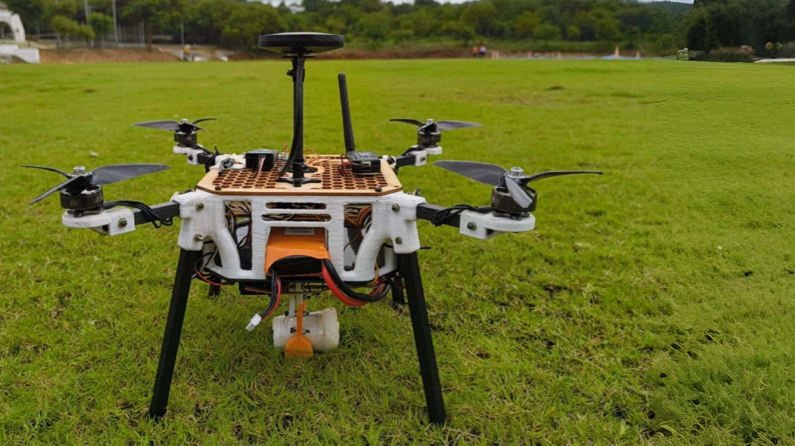
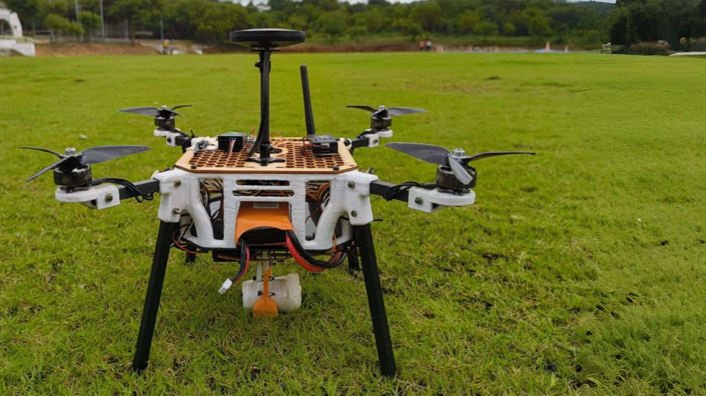

My Projects
Here are some of my featured projects. Each one was built with passion and attention to detail.

Object Detection on Laptop
Real-time object detection using YOLOv8. Trained on a custom dataset to detect cat, dog, and person with high accuracy, running efficiently on a laptop CPU.

Edge AI Object Detection on Raspberry Pi 4
Optimized real-time object detection for resource-constrained edge devices.
- Trained and deployed lightweight models for real-time person/animal detection.
- Optimized inference pipeline for low-latency performance on RPi 4.
- Achieved 89 mAP on custom dataset of 5,000 images with fine-tuned YOLO.
Hardware-Accelerated Object Detection on FPGA (ZCU104)
High-performance inference acceleration using Xilinx MPSoC.
- Implemented YOLO object detection on Xilinx ZCU104 using Vitis AI and DPU IP.
- Performed model quantization and hardware-software co-design.
- Evaluated significant performance improvements over straight CPU inference.
Autonomous AI-Driven Drone – AeroTHON (AIR 3)
Autonomous surveillance and disaster response system.
- Secured AIR 3 at SAE AeroTHON 2024.
- Integrated Computer Vision for hotspot detection and shape classification.
- Implemented path planning/mission execution using ROS and Gazebo.
Industrial Safety Monitoring
Developed a real-time Computer Vision system to detect Person-with-Harness for industrial work-at-height safety compliance.
- Implemented real-time video stream inference pipeline using OpenCV.
- Optimized detection performance under varying lighting and motion conditions.
Conveyor Belt Monitoring System
Designed a vision-based automation system to detect material presence and belt operational state (Moving / Not Moving).
- Built classification and motion analysis pipeline for industrial automation.
- Improved monitoring reliability using real-time frame processing techniques.

360° Image Stitching & Autonomous Navigation
Advanced vision-based capabilities for the Quanser QCar.
- 360° Panorama Stitching using 4 CSI cameras with alpha-blending.
- Autonomous yellow line lane following using HSV color space filtering.

Real-Time Car Avoidance & Lane Following
Real-time lane detection and obstacle avoidance framework implemented on the Quanser QCar.
- Integrates vision-based lane tracking with LiDAR-based obstacle sensing.
- Finite State Machine (FSM) control for intelligent maneuvering and lane rejoining.
 
